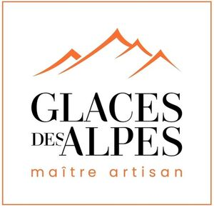

Trade Mark Journal No.2025/026 27 June 2025
WO0000001859245 (30,35,43)
Office of origin: France
Date of International Registration:10 April 2025
Date of designation in the UK:
10 April 2025

The mark contains the colours orange, black and white
International priority date claimed: 10 December 2024
(France)
(5104496)
- Class 30
- Coffee, tea, cocoa, sugar, rice, tapioca, sago, coffee substitutes; flour and preparations made from cereals, bread, pastries and confectionery, edible ices, ice creams; frozen yogurts (edible ices); sherbets [ices]; powders and binding agents for edible ices; deep-frozen pastries, confectionery and Viennese pastries; frozen desserts; water ices; ice cream bars; ice cubes; ice sticks; frozen lollipops; honey, golden syrup; yeast, baking powder; salt, mustard; vinegar, sauces (condiments); spices; ice for refreshment; sandwiches, pizzas; pancakes; cookies (biscuits); cakes; rusks; sugar confectionery; chocolate; beverages based on cocoa, coffee, chocolate or tea.
- Class 35
- Advertising, dissemination of advertising materials (leaflets, prospectuses, printed matter, samples); dissemination of advertisements; rental of advertising space; rental of advertising time on all communication media; publication of advertising texts; online advertising on a computer network; public relations; retail sale or wholesale services for coffee, tea, cocoa, sugar, rice, tapioca, sago, coffee substitutes, flour and preparations made from cereals, bread, pastries and confectionery, edible ices, ice cream, frozen yogurt (edible ices), sherbets, powders and binding agents for edible ices, frozen pastries, confectionery and Viennese pastries, frozen desserts, water ices, ice cream bars, ice cubes, ice sticks, frozen lollipops, honey, treacle, yeast, baking-powder, salt, mustard, vinegar, sauces (condiments), spices, ice for refreshment, sandwiches, pizzas, pancakes, biscuits, cakes, rusks, sugar confectionery, chocolate, beverages made with cocoa, coffee, chocolate or tea.
- Class 43
- Services for providing food and beverages; ice cream serving services; fast-food services; bar services; self-service restaurant services; tea room; cafeterias, catering services; canteen services; snack bars; takeout services (preparation of meals); fast take-away food and beverage services; information services concerning the preparation of food and beverages; advisory services in the field of culinary art.
GLACES DES ALPES
Representative: Monsieur LE BELLOUR Eric WIPLAW, 21 Place de la République, F-75003 PARIS, FRANCE